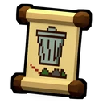

Scrap
Scrap is a common material. Broken-down gear from the Smelter. Used for fees and insurance.
Item sources
| Source | Quantity | Rarity | Notes |
|---|---|---|---|
| Scrap Warlord | 4–8 | 1/2 | |
| Raider | 1–2 | 1/19 | |
| Garbage Man | 20–30 | 1/400 | |
| Champions | 1–3 | 1/5 | Any champion |
| The Dump chests | 2–5 | 50% of its extra row | Endless Dungeon |
| Slime Grotto chests | 1–3 | 30% of its extra row | Endless Dungeon |
| Sand Storm chests | 2–4 | 40% of its extra row | Endless Dungeon |
| Salvaging gear at the Smelter | By the piece's wear level | Always |
Uses
| Makes | Takes | Level | Notes |
|---|---|---|---|
 Ipe Plank Ipe Plank | 5 | 30 | Master Refinery |
 Adamantite Ingot Adamantite Ingot | 5 | 30 | Master Refinery |
 Nettle Fabric Nettle Fabric | 5 | 30 | Master Refinery |
 Orichalcum Ingot Orichalcum Ingot | 10 | 50 | Master Refinery |
 Darkwood Plank Darkwood Plank | 10 | 50 | Master Refinery |
 Lotus Cloth Lotus Cloth | 10 | 50 | Master Refinery |
 Warden's Seal Warden's Seal | 8 | 25 | Sealwright |
 Slime Bag Slime Bag | 3 | 30 | |
 Dump Chart ×2 | 10 | 25 | Cartographer's Table |
 Storm Chart ×2 Storm Chart ×2 | 6 | 25 | Cartographer's Table |
 Grotto Chart ×2 Grotto Chart ×2 | 3 | 25 | Cartographer's Table |
 Riveted Plate Riveted Plate | 10 | 60 | Smelter |
Notes
Not written yet
When Scrap is worth getting, and what to do with it.
Gallery
Not written yet
No pictures yet: renders, models and animations go here.
Trivia
Not written yet
Anything else worth knowing.
Changes
Not written yet
What changed for Scrap, update by update.